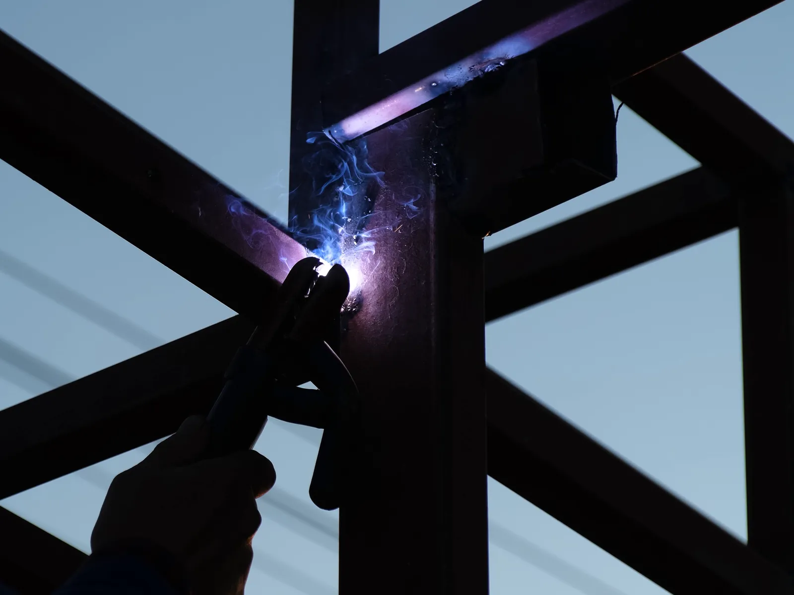

Home · Mobile Welding · Specialized Mobile Welding
Specialized Mobile Welding Service in New Orleans
At Big Easy Mobile Welders, we take on the welding jobs that do not fit a single category, from repairs at your home or office to custom metal pieces, across New Orleans. No project is too small or too large for our licensed, insured team and fully equipped mobile unit.

We come to the jobWhat Is Part of Every Specialized Mobile Welding Job in New Orleans?
With specialized mobile welding in New Orleans, you get a free look at the job and a no-obligation quote, repair work at homes and offices, custom metal pieces made to order, projects of any size, a licensed and insured welder on site with a full rig, and a walkthrough when the work is done.
A Free, No-Obligation Quote
We look at the piece, the damage or the drawing, then quote the job with transparent pricing and no hidden fees.
Repairs at Home or Office
Broken brackets, cracked frames, split joints and worn metal parts can often be fixed where they are installed.
Custom Metal Pieces
If you need a part or piece that no store sells, we can fabricate it to your measurements.
Any Project Size
A single tack on a loose bracket and a large build get the same attention. We scope each job before we price it.
A Full Rig on Site
Our fully equipped mobile unit brings the welder, the prep tools and the materials to your door.
Walkthrough and Follow-Up
A licensed, insured welder shows you the finished work, and we remain available afterward for follow-up support.

Which Specialized Mobile Welding Jobs Do We Handle in New Orleans?
The specialized mobile welding jobs we handle in New Orleans fall into four groups: repairs around the home, repairs at offices and commercial buildings, custom metal pieces built to measure, and one-off jobs that do not fit any of our other service pages. All of them are welded on site where possible.
Home Repairs
Metal around a house takes wear: brackets, frames, supports and fixtures crack or work loose. We repair them in place so you are not left hauling heavy steel to a shop.
Office and Commercial Repairs
Businesses call us for damaged metal frames, supports and fixtures on their property. We work around your space and set up a clear, safe area before we strike an arc.
Custom Metal Pieces
Sometimes the right part does not exist yet. We fabricate custom pieces to your measurements and fit them on site.
One-Off Jobs
Plenty of welding work has no neat label. If it is metal and it needs joining, rebuilding or reinforcing, tell us about it and we will tell you honestly whether we can do it.
Why Does Specialized Welding Suit Older Buildings and the Humid New Orleans Climate?
Specialized welding suits New Orleans because many buildings in the city are older, raised or altered over the years, and humid air rusts their metal parts. Repairs often do not match a standard part, so the fix has to be measured, cut and welded to the piece in front of the welder rather than ordered from a catalog.

Older homes and buildings rarely have parts you can buy off a shelf.
Raised houses, pier foundations, old storefronts and add-ons from past owners all carry metal that was made to fit one spot. When it rusts or breaks, the replacement is usually made to fit that spot too.
Steel under a raised home is a good example. Our guide on structural steel repair on raised and pier-supported homes covers what that work involves.
Why Choose Specialized Mobile Welding Over a Shop in New Orleans?
Specialized mobile welding in New Orleans brings the welder to the work instead of the work to a shop. Pieces that are fixed in place, heavy or awkward stay where they are, the fit is checked against the real structure, and you skip the cost and time of removing, hauling and reinstalling the metal.

Nothing to Haul
Fixed or heavy metal stays put. You avoid taking it apart, loading it up and putting it back once it is welded.
Fit Checked in Place
Welding at the spot lets us match the repair or the custom piece to the structure it joins. Measurements taken on site leave less room for error.
On Your Schedule
We book a time that is convenient for you and work around your home or business while we are there.
How Does Our Specialized Mobile Welding Service Work in New Orleans?
Specialized mobile welding in New Orleans starts when you describe the job and request a free quote. We book a time that suits you, our welders do the work on site from the mobile unit, and we close with a walkthrough, easy payment options and follow-up support.
Describe the Job
Describe the piece, the problem and where it is, by phone or through our online estimate form.
Set a Convenient Time
With the quote approved, we set a convenient time for the visit.
On-Site Welding
Our welders arrive with all the tools, prep the metal and complete the repair or the custom piece.
Walkthrough and Payment
We go over the finished work with you, offer easy payment options and stay a call away.
 The rig comes to you
The rig comes to you
How Much Does Specialized Mobile Welding Cost in New Orleans?
Because no two specialized mobile welding jobs in New Orleans are alike, the cost turns on the size of the project, the metal involved, whether it is a repair or a custom piece built from scratch, and how easy the work area is to reach. We see each job first and quote it free, with no hidden fees.
Size of the Project
A single cracked joint takes far less time than a full custom build or a long run of repairs.
The Metal Involved
Different metals call for different processes, filler and care, which changes the time involved.
Repair or Custom Piece
Fixing an existing part and designing and fabricating a new one are priced differently.
Access to the Work
Ground-level work goes faster than a joint up on a roof, under a house or in a tight corner.
What Helps a Specialized Mobile Welding Job Go Well in New Orleans?
A specialized mobile welding job in New Orleans goes smoothly when you know what the piece is and what it does, have photos or measurements ready, and check whether the site has rules for hot work. Those details let us quote the job properly and pack the right equipment and materials for the visit.
What the Piece Is and Does
Tell us what the metal holds, carries or supports, and what it is made of if you know. That tells us how strong the repair has to be.
Photos and Measurements
Clear photos of the damage, or a sketch with measurements for a custom piece, let us plan the work and price it accurately.
Rules at Commercial Sites
Offices and commercial buildings may require a hot work permit and a fire watch before welding. Our guide on hot work permits and fire watch for commercial welding explains what to expect.
What Do Reviews Say About Our Specialized Mobile Welding Team in New Orleans?
Customers keep praising the professional service, the fair prices and how quickly our mobile welders get the work done. That licensed, insured New Orleans team is the one that handles specialized repairs and custom metal pieces on site at homes, offices and commercial buildings, with workmanship reviewers call top-notch.
Big Easy Mobile Welders provide quality welding work at a reasonable price. They have been reliable and quick to respond whenever I've needed them, which has made it easy for me as their customer!
The guys from Big Easy Mobile Welders were great! They came to my house and welded two iron railings with a quick turnaround time, which was just what I needed. The quality of workmanship is top notch which made me a satisfied customer! If you need anything welded then these guys will be able to help out big time.
I can't recommend Big Easy Mobile Welders enough! They helped me out of a jam by welding our gate, and their work is amazing. The fast service combined with great quality made all the difference in getting things done quickly without any hassle for me. Thanks again, guys!
If you need a welder for any type of job, I highly recommend Big Easy Mobile Welders. The team did an amazing job on my home and business! They were professional from start to finish. Thankful that their work could help me get back up and running again sooner than expected.
I had the pleasure of working with Big Easy Mobile Welders this past week. They are not only professional and skilled, but also very affordable! I highly recommend them for any welding job you may need done on your property or vehicle. You won't regret using these guys as they do amazing work at a fair price 10/10 would do again!
What Services Often Follow Specialized Mobile Welding Jobs in New Orleans?
Specialized mobile welding in New Orleans often leads into our other services: custom welding and metal fabrication for new pieces, pipe welding, gate repairs, iron railing work and metal window frame repairs. The same licensed, insured team handles each of them, on site wherever the work allows.

Custom Welding
Custom ironwork, estimated before we start so we arrive with the right equipment for the job.
View custom welding →
Metal Fabrication
Fabrication of all types of metal for residential, commercial and industrial settings.
View metal fabrication →
Pipe Welding
Pipe and pipeline repair on site, with stick and gas-shielded processes matched to the pipe.
View pipe welding →
Gate Welding
Gate repairs and custom gates in steel or aluminum, with materials and tools covered in your estimate.
View gate welding →
Iron Railing Welding
Custom indoor and outdoor railings for stairways, decks and balconies, built to fit your property.
View railing welding →
Window Welding
Repairs for rusted and worn metal window frames, carried out at your home.
View window welding →
How Do You Get a Specialized Mobile Welding Quote in New Orleans?
For a free specialized mobile welding quote in New Orleans, use our online estimate form or call (504) 370-2757. Describe the piece, the problem and where it is, and we will reply with a no-obligation quote, transparent pricing and no hidden fees, so you know the cost before anything is scheduled.
Loading the estimate form...
If it does not appear, call us at (504) 370-2757.

What Do People Want to Know About Specialized Mobile Welding in New Orleans?
Before booking specialized mobile welding in New Orleans, property owners usually ask what welding repair and structural welding mean, who needs a welder, whether cast iron can be welded or joined to steel, how thin metal is welded, and how cracks and broken metal are repaired.
What is welding repair?
Welding repair restores a damaged metal part by fusing new metal into it instead of replacing the whole piece. It covers cracked welds, broken brackets, rusted sections and worn parts. The welder cleans the damage, removes any weak metal, then welds and finishes the area so the part works again.
What is structural welding?
Structural welding joins the steel members that carry loads in buildings and other structures, such as beams, columns and supports. In the United States it is commonly done to the American Welding Society's D1.1 Structural Welding Code for steel, because a failed weld in a load-bearing member can put people at risk.
Who needs welding services?
Homeowners need welders for broken gates, railings, fences and frames. Businesses call them for damaged fixtures, supports and equipment, and contractors use them for steel on building sites. Anyone with metal that has cracked, rusted through or needs a custom part can usually benefit from a welder's help.
Can you weld cast iron?
Yes, but cast iron is harder to weld than steel because its high carbon content makes it brittle and prone to cracking. Welders usually preheat the part, use nickel-based rods, keep the welds short and let the piece cool slowly. Some cast iron repairs are brazed instead of welded.
Can you weld cast iron to steel?
Cast iron can be welded to steel, usually with a nickel-based filler that bridges the two metals and tolerates their different properties. The cast iron side is often preheated and cooled slowly to limit cracking. It is a careful repair, so a welder will look at the parts before saying it is a good fit.
How do you weld thin metal without burning through?
Use a lower heat setting, a thinner wire or rod and short welds or tack welds spaced along the joint instead of one long bead. Letting the metal cool between passes and keeping a tight fit-up also helps. TIG and MIG are often preferred on thin metal because they give the welder fine control.
How do you repair a small crack in metal with welding?
The crack is cleaned and its full length found, and a small hole is often drilled at each end to stop it from spreading. The crack is then ground into a groove and welded from the bottom up. Once the weld cools, it is ground smooth and coated to keep rust out.
How do you repair metal without welding?
Small, low-stress repairs can be made with bolts and plates, rivets or metal epoxy, and some joints can be brazed or soldered. These fixes work for light loads but usually do not match the strength of a proper weld, so they suit temporary or non-structural repairs better than parts that carry weight.


Book Your Free Mobile Welding Estimate
Tell us what needs welding, and we will bring the rig to your door anywhere in the New Orleans area.